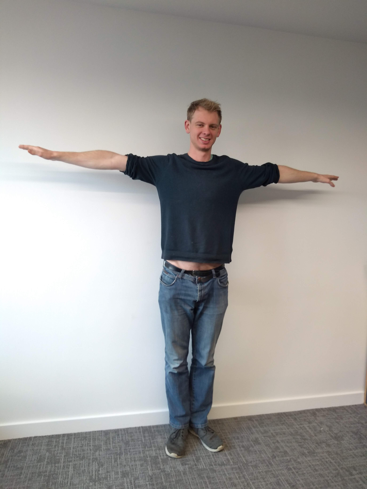

<button type="button" onclick="init()">Start</button>
<div><canvas id="canvas"></canvas></div>
<div id="label-container"></div>
<p>Image to use:</p>


<p>Canvas:</p>
<canvas
  id="myCanvas"
  width="220"
  height="277"
  style="border:1px solid #d3d3d3;"
>
</canvas>
<script src="https://cdn.jsdelivr.net/npm/@tensorflow/tfjs@1.3.1/dist/tf.min.js"></script>
<script src="https://cdn.jsdelivr.net/npm/@teachablemachine/pose@0.8/dist/teachablemachine-pose.min.js"></script>
<script type="text/javascript">
  const URL = "https://teachablemachine.withgoogle.com/models/zrHzjhdr/";
  let model, webcam, ctx, labelContainer, maxPredictions;

  async function init() {
    const modelURL = URL + "model.json";
    const metadataURL = URL + "metadata.json";
    model = await tmPose.load(modelURL, metadataURL);
    await predict();
  }

  window.onload = function() {
    var c = document.getElementById("myCanvas");
    var ctx = c.getContext("2d");
    var img = document.getElementById("matt");
    ctx.drawImage(
      img,
      0,
      0,
      img.width,
      img.height // source rectangle
    );
  };

  async function predict() {
    const { posenetOutput } = await model.estimatePose(
      document.getElementById("myCanvas")
    );
    const prediction = await model.predict(posenetOutput);
    console.log(prediction);
  }
</script>
